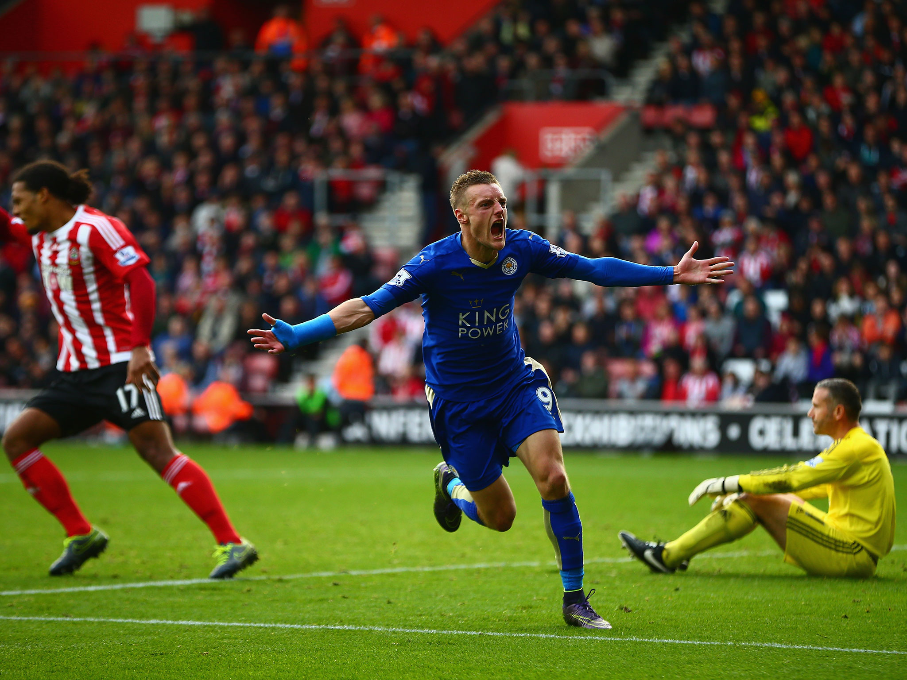

Jamie Vardy celebrates after scoring against Southampton
Here's a timeline of Jamie Vardy's 2015/16 fairytale season
8 August 2015 - Starts the season by scoring the opening goal for Leicester
13 September 2015 - Scores the equaliser in Leicester's 3-2 comeback victory against Aston Villa
26 September 2015 - Scores a brace in Leicester's 2-5 defeat to Arsenal, reaching seven league goals for the season, eclipsing his goal tally of the previous year
24 October 2015 - Scores the only goal of a home win over Crystal Palace, the seventh consecutive Premier League match in which he scored, and his tenth goal of the league season
31 October 2015 - Scores in his eighth league game in a row on 31 October, and becoming only the third player ever to do so in the Premier League
A week later, scores a penalty to secure a 2-1 win over Watford, putting him on nine consecutive games with a goal, behind Van Nistelrooy's Premier League record of ten
Premier League Player of the Month for October 2015
21 November 2015 - Vardy matches Van Nistelrooy's record of consecutive Premier League games with a goal, opening a 3-0 win over Newcastle United.
A week later, against Manchester United, scores again to claim the record for himself
Premier League Player of the Month for November 2015, becoming only the fifth ever player to win the award in consecutive months
2 February 2016 - Scores both goals in a 2-0 win against Liverpool, the first being a long-distance volley described as "world class" by opposing manager Jurgen Klopp
10 April 2016 - Scores both goals (his 20th and 21st of the season) in Leicester's 2-0 win at Sunderland
A week later, scores the first goal of a 2-2 home draw against West Ham United
With 24 league goals, Vardy was the second highest scorer in the Premier League for the 2015-16 season, alongside Sergio Aguero, only one goal behind Golden Boot winner Harry Kane
One of four Leicester players in the PFA Team of the Year
Named FWA Footballer of the Year, and the 2016 Barclays Premier League Player of the Season
Chat shit, get banged
If you have time, you should read more about this amazing player on his Wikipedia entry